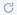

Present your workpad
editWhen you are ready to present your workpad, use and enable the presentation options.
-
Configure the autoplay options.
- From the workpad menu, click View > Autoplay settings.
- Under Change cycling interval, select the interval you want to use, or Set a custom interval.
- To enable autoplay, click View > Turn autoplay on.
- To start your presentation, click View > Enter fullscreen mode.
- When you are ready to exit fullscreen mode, press Esc.
Use the zoom options
editTo get a closer look at a portion of your workpad, use the zoom options.
- Click View > Zoom.
- Select the zoom option.
Change the auto-refresh interval
editChange how often the data refreshes on your workpad.
- Click View > Auto refresh settings.
-
Select the interval you want to use, or Set a custom interval.
To manually refresh the data, click .